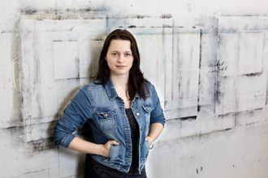

| 1980 | born in Wriezen grown up in Bernau near Berlin |
| 2001-02 | History of Art und English Studies at Humboldt University in Berlin |
| 2002-03 | Studies of Book Art at the University of Art and Design (HKD) Halle, Burg Giebichenstein |
| 2003-08 | Studies of Painting/Graphics/Glass Art at the HKD Halle, Burg Giebichenstein |
| 2008 | Diploma Fine Art, Graduate of HKD Halle |
| Franziska Peter lives and works in Berlin | |
| Awards/ Scholarships | |
|---|---|
| 2009 | Project scholarship, Graduate scholarship program of Saxony-Anhalt |
| 2006 | 1st Prize/ Art Prize of Munster |
| Group exhibitions | |
| 2014 | Fresh Legs, Heike Arndt DK, Berlin |
| Anonyme Zeichner | based in Berlin, pavillon am milchhof, Berlin | |
| 2013 | »Zwischenzeit«, Gallery Filser & Gräf, München |
| 2012 | 10º MUMIA - Underground World Animation Festival, Belo Horizonte, Brazil |
| SCRATCH! International Animation Film Festival, Lecce, Italy | |
| Schau Fenster - Schauraum für Kunst, Berlin, Germany | |
| »sonderfART - Giebichenstein/Halle via Leipzig nach München«, whiteBOX, Munich | |
| 2011 | Blooom Award|ART.FAIR, Köln |
| »Videotational I«, Minken & Palme, Berlin | |
| »Biennale Internazionale«, Museo Civico di San Francesco, Montone (Perugia), Italy |
|
| 2010 | »graduiert!«, Volkspark, Halle |
| 2009 | »Dreißig mal Dreißig«, galerie merkle, Stuttgart |
| »Franziska Peter & Wieland Payer | Malerei und Grafik« Municipal Art Gallery Geislingen |
|
| »Fermente - Positionen Junger Kunst«, maerzgalerie, Leipzig | |
| 2008 | Diploma exhibition of the Art Department of the HKD Halle in the Volkspark, Halle |
| 2007 | »Anonyme Zeichner«, Blütenweiss - Raum für Kunst, Berlin |
| »N*AKT«, Alte Börse des MDR, Leipzig | |
| »Große Kunstausstellung«, Villa Kobe, Halle | |
| 6th International Exhibition »Glasplastik und Garten«, Munster | |
| 2004 | Glass Museum Alter Hof Herding, Coesfeld |
| Solo exhibitions | |
| 2008 | »Open End«, Kunstwerkstatt, Magdeburg |
| Diploma solo exhibition, Galerie im Volkspark, Halle | |
| 2006 | »Toying with the idea«, Forum of Young Artists, TÜV Leipzig |
| Works in public collections | |
| Ernsting Stiftung, Coesfeld | |